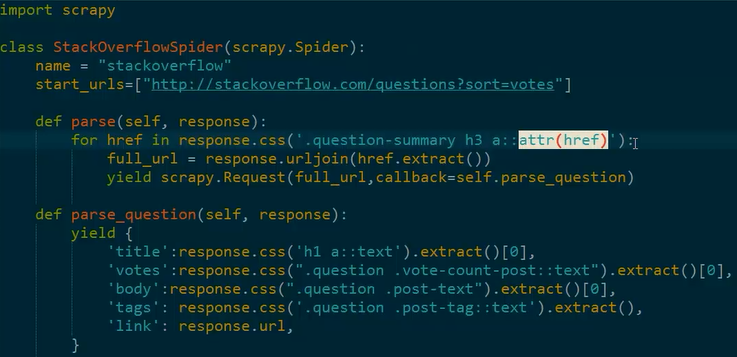

1、在somefile.py文件中找到已定义的爬虫，然后通过抓取引擎运行爬虫。
2、具体的抓取过程：
1） 使用start_urls作为初始url生成Request，并默认把parse作为它的回调函数。
2）在parse中采用css选择器获得目标URL，并注册parse_question作为目标URL的回调函数。
3.注：
1，请求被异步的调度、处理。
2，有一些参数可以控制过程，比如每个域名/ip的并发请求数、请求之间的下载延迟（或者自动调节）
1、内置的数据抽取器
2、交互式控制台用于调试数据抽取方法
3、内置对结果输出的支持，可以保存为JSON, CSV, XML等
4、自动处理编码
5、支持自定义扩展
6、丰富的内置扩展，可用于处理：
1）cookies and session（记录客户属性，如用户名、密码）
2）HTTP features like compression, authentication, caching
3） user-agent spoofing
4）robots.txt
5） crawl depth restriction
7、远程调试scrapy
8、更多的支持，比如可爬取xml、csv，可自动下载图片等等。
1、掌握简单爬虫的编写方法，如本节示例；
2、了解scrapy的更多特性；
模仿本节所讲的爬虫示例，实现“联合早报网”的“全球金融观察”页面列表中新闻（暂忽略翻页）的抓取，并把抓取的内容保存为csv
要求：
初始URL：http：//www.zaobao.com/special/report/politic/fincrisis
内容页抓取：标题（title）、时间（dt）、正文（body）、
链接（link）
数据保存格式：csv
可选附加：保存屏幕的输出日志到文件（scrapy.log）中
【本文由麦子学院独家原创，转载请注明出处并保留原文链接】